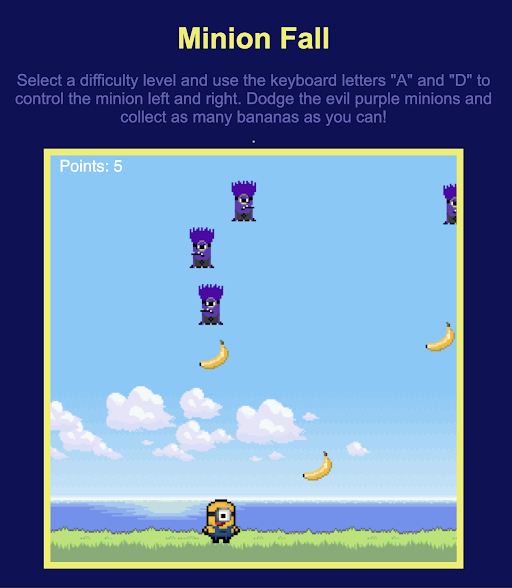
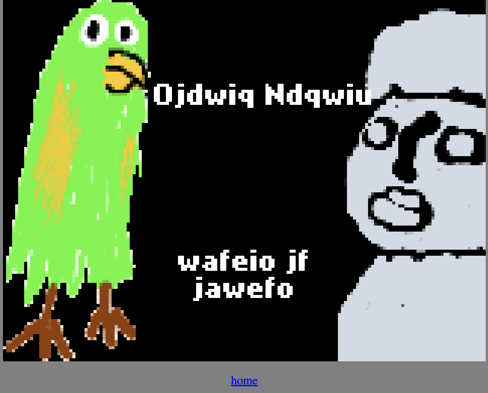
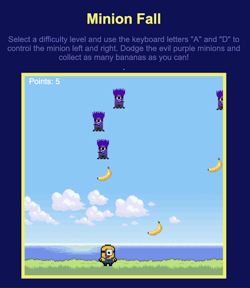
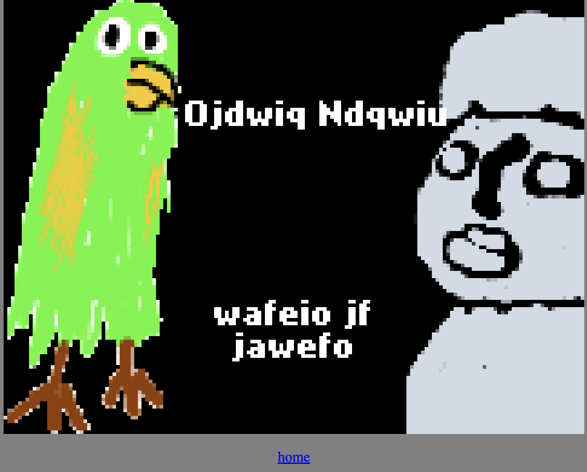

Team Members: Lindsay Liu, Angela Cha, Selina Xu
We, Selina Xu, Lindsay Liu, and Angela Cha, want to create an Among Us themed program that includes NPCs, pathfinding, and mini games. We will start with the game being single player and the other characters as NPCs. We will utilize arrays and classes to create the NPCs. In essence, this game will largely follow the same rules as Among Us, where a player is required to navigate a map like this one:

We will probably make a smaller version of the original map, having less rooms to go into. We would use the gif functions or sprites to make the map look more interesting or enticing. We will also make this in the style of old arcade games, where the characters and settings are pixelated tile-based artworks. We will either use open source characters, or potentially draw and create our own assets for characters and environments. PixelArt, a website that allows us to specifically create art in pixels, Adobe Photoshop and Illustrator are all resources we might access to secure our assets.
The player will coexist with a number of NPCs, who will be programmed to randomly roam around the map’s allocated paths. An NPC will be chosen randomly to be the imposter, with its character sprite also being randomized. The player will have to complete a set of tasks without being eaten by the imposter to win. Should the player be eaten by the imposter, the game is over and the player is given the option to start over. In order for this to work, we project that we will need to incorporate path finding or barrier navigation code to prevent the player and all NPCs from going wherever they want on the map. We will also require sprite sheets of Among Us characters in order to animate walking animations into the game.

The tasks the player has to complete will vary each playthrough, with a current projected amount of three tasks per game. Each task will be some kind of simple mini game, such as a match or memory game, a typing game, or a minion fall game (where the player needs to run around the screen to avoid falling obstacles). The variations can come in two forms, either the goal to complete the game is different, or the mini game itself is different altogether. Specific parts of the map will serve as the spot where tasks can be activated. They will be visually indicated by a small image of the task, or maybe a light bulb of sorts that will light up once the task is completed. They can start by holding a state of 0, to signify that the task has yet to be started, and should the player complete the task, they will change to a state of 1 and trigger an advancement in the game. When all of the tasks have been completed, or all of the ‘checkpoints’ hold a state of 1, the game will be won.
 



Current questions we have for our proposed project is how we are going to program the player being eaten. Should the player be killed everytime they walk past the imposter, the game will be too difficult to win. Some kind of probability must be involved whenever the player comes within a certain distance of the imposter. Furthermore, we would also want to learn how to animate the scene of the imposter killing the player. We are also still brainstorming the different types of tasks we can incorporate into the game, as well as how many tasks we can realistically make.